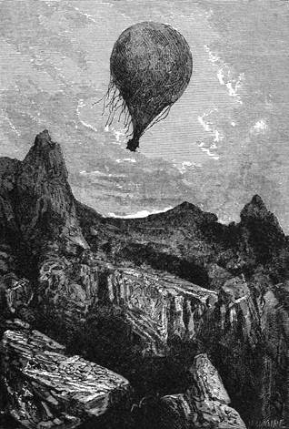

Známky rostlinstva. – Ztřeštěná myšlenka francouzského spisovatele. – Nádherná země. – Království Adamaua. – Výzkumy Spekeovy a Burtonovy sloučené s výzkumy Barthovými. – Hory Atlantické. – Řeka Binué. – Město Jola. – Bagele. – Hora Mendif.
Od té chvíle, co se vydali na cestu, ujížděli cestovatelé velmi rychle; toužili opustiti tu poušť, která by se jim byla málem stala tak osudnou.
Ve čtvrt na deset dopoledne zahlédli jakési známky rostlinstva, traviny plovoucí po moři pískovém a zvěstující jim blízkou zemi jako Krištofu Kolumbovi: zelené výhonky vyrážely bojácně mezi oblázky, které se zase stávaly skalisky tohoto okeanu.
Kopce dosud nevysoké pnuly se na obzoru; jich obrysy obrážely se neurčitě mizejíce v mlze; jednotvárnost se vytrácela.
Doktor uvítal radostně tuto novou krajinu, a jako námořník ve strážním koši byl by málem vykřikl:
„Země! země!“
Za hodinu po té rozkládala se pod jeho zraky pevnina vzhledu posud divokého, leč méně plochá, méně holá; několik stromů rýsovalo se na šedavé obloze.
„Což jsme ve vzdělané zemi?“ pravil lovec.
„Vzdělané, pane Dicku? to se jen tak říká; není dosud vidět obyvatelů.“
„To nepotrvá dlouho,“ odpověděl Fergusson, „vzhledem k tomu, jak rychle ujíždíme.“
„Což jsme posud v zemi černochů, pane Samuele?“
„Posud, Joe, v sousedství země Arabů.“
„Arabů, pane?… pravých Arabů s velbloudy?“
„Ne, bez velbloudů; tato zvířata jsou v těchto končinách vzácna, ať nedím neznáma; abychom se s nimi setkali, musíme postoupiti několik stupňů na sever.“
„To je mrzuté.“
„A proč, Joe?“
„Poněvadž by nám mohli posloužit, kdyby vítr přeskočil proti nám.“
„Kterak?“
„Pane, namanula se mi právě myšlenka: mohli bychom je zapřáhnouti do loďky a nechat se jimi táhnouti. Co tomu říkáte?“
„Ubohý Joe, tuto myšlenku měl už kdosi jiný před tebou; provedl ji velice duchaplný spisovatel francouzský[48] – v románě, ovšem. Cestovatelé nechají se v baloně vléci velbloudy; přijde lev, sežere velbloudy, polkne vlečák a vleče místo nich, a tak dále. Jak vidíš, vytrysklo to vše z obrazotvornosti nadmíru bujné a nemá nic společného s naším způsobem pohonu.“
Joe, poněkud zahanbený tím, že jeho myšlenky bylo již použito, přemítal, které zvíře bylo by mohlo sežrati lva, ale ničeho se nedomysliv, jal se opět pozorovati krajinu.
Pod jeho zrakoma rozlévalo se jezero prostřední velikosti s amfiteatrem pahorků, které neměly ještě práva nazývati se horami, jsouce prostoupeny četnými, úrodnými údoly s neproniknutelnými houštinami nejrozmanitějšího stromoví.
Palma olejová měla vrch v této spoustě, honosí se listy zdéli patnácti stop na kmeni ozbrojeném ostrými trny; bombax pouštěl do větru jemné pápěrky svých semen; silná vůně pandanu, „kendy“ Arabů, prosycovala vzduch až do pásma, jímž plula Viktorie; dýnovník s palmovými listy, sléz, který nese sudanské ořechy, baobab a banany doplňovaly tuto bujnou květenu krajů meziobratníkových.
„Země jest nádherná,“ prohodil doktor.
„Hle, zvířata,“ okazoval Joe; „lidé nejsou daleko.“
„Ha! ti krásní slonové!“ zvolal Kennedy. „Což by nebylo možno trochu si zalovit?“
„A kterak bychom byli s to, abychom se zastavili, milý Dicku, jsouce v proudě tak mocném? Nikoli, pokus muky Tantalovy! Později si to nahradíš.“
Bylo tu vskutku čím roznítiti obrazivost lovcovu; Dickovi poskakovalo srdce v těle, a prsty svíraly křečovitě hlaviště jeho Purdeyovky.
Zvířena tohoto kraje vyrovnala se květeně. Divoký buvol válel se v husté trávě, v níž zapadal docela; šedí, černí nebo plaví sloni největší velikosti postupovali lesem jako větrná smršť, lámajíce, okusujíce, ničíce a svůj pochod spoustou označujíce; na olesněných svazích pahorků řinuly se vodopády a vodotoky na sever směřující; tu koupali se hroši s velkým hlukem, a ochechule zdéli dvanácti stop a rybovitého tvaru roztahovaly se po březích, obracejíce k nebi kulaté prsy mlékem nalité.
Byl to hotový vzácný zvěřinec v podivuhodné rostlinárně, kde ptáků bez počtu a tisícerých barev poletovalo a štěbetalo mezi stromovitými rostlinami. Po této marnotratné přírodě poznal doktor krásné království Adamauů.
„Vstupujeme do šlépějí novodobých objevů,“ pravil; „beru se přerušenou drahou cestovatelů; je to šťastná náhoda, přátelé; budeme s to, abychom práce setníků Burtona a Spekea sloučili s výzkumy doktora Bartha; opustili jsme Angličany a setkali jsme se s Hamburčanem, v brzku pak octneme se na nejzazší mezi, které dospěl tento odvážný učenec.“
„Zdá se mi,“ ozval se Kennedy, „že mezi těmito dvěma výzkumy prostírá se náramný rozloh země, pokud dovedu posoudit z cesty, kterou jsme vykonali.“
„To lze snadno vypočíst; vezmi mapu a podívej se, na jaké délce nalézá se polední cíp jezera Ukereve dosažený Spekem.“
„Je skoro na třicátém sedmém stupni.“
„A kde leží město Jola, kam stihneme dnes večer, a kam až dorazil Barth?“
„Asi na dvanáctém stupni délky.“
„To činí tedy dvacet pět stupňů po devadesáti šesti kilometrech, tedy úhrnem dva tisíce čtyři sta kilometrů.“
„Pěkný cíl procházky pro lidi, kteří by šli pěšky,“ prohodil Joe.
„Tak se skutečně děje. Livingstone a Moffat postupují stále do vnitra. Ňassa, kterouž objevili, není příliš vzdálena od jezera Tanganiky, ohledaného Burtonem; do konce století budou ohromné ty kraje dojista prozkoumány. Avšak,“ dodal doktor pohlédnuv na bussolu, „lituji, že nás vítr nese tak na západ, byl bych se raději dostal na sever.“

Kráter hory Mendifu.
Po dvanáctihodinném letu octla se Viktorie na hranicích Nigricie. První obyvatelé této země, Arabové Šuové, pásli svá kočující stáda. Náramná temena hor Atlantických rýsovala se na obzoru, kteréhožto pohoří nedotkla se posud žádná noha evropská, a jehož výška odhaduje se asi na třinácte set sáhů. Jeho západní úbočí je východištěm všech řek této části Afriky do okeanu tekoucích; jsou to Měsíčné hory této končiny.
Konečně objevila se zrakům cestovatelův opravdová řeka, a po obrovských mraveništích podle ní vyvstávajících poznal doktor, že je to Binué, jeden z velkých přítoků nigerských, jejž domorodci nazvali „Zřídlem vod“.
„Tato řeka,“ vykládal doktor soudruhům, „stane se někdy přirozenou drahou obchodu s vnitrem Nigricie; za velitelství jednoho z našich statečných kapitánů doplul již parník Plejada proti ní až do města Joly; z toho vidíte, že jsme ve známé zemi.“
Četní otroci zabývali se pracemi polními sejíce sorgho, jakési proso, jímž se po přednosti živí; přelet Viktorie, ujíždějící jako povětroň, působil nejhloupější úžas. Večer zastavila se zdálí šedesáti kilometrův od Joly a před ní, leč v dáli, strměly dva ostré kužele hory Mendifa.
Doktor dal spustiti kotvy a zachytil se v koruně vysokého stromu; ale velmi silný vítr zmítal Viktorií, tak že se skláněla až do vodorovna, čině chvílemi polohu loďky nadmíru nebezpečnou. Fergusson nezamhouřil za celou noc ani oka; nejednou byl už na tom, aby přeťal kotviční vazák a nechal se vichrem unésti. Konečně ztišila se bouře, a kolísání vzducholodi pozbylo znepokojivého rázu.
Nazejtří byl vítr mírnější, leč oddaloval cestovatele od města Joly, které byvši znova vystavěno Fulby, dráždilo zvědavost Fergussonovu; nicméně nezbývalo leč spokojiti se směrem severním, ba poněkud i východním.
Kennedy navrhl, aby se zastavili v tomto kraji bohatém lovnou zvěří; Joe předstíral, že se pociťuje potřeba čerstvého masa; než divoké mravy tohoto kraje, chování obyvatelstva a několik ran vypálených po Viktorii přiměly doktora, že se bral dále. Tíhli tu končinou, jevištěm krveprolití a požárů, kde válečné zápasy trvají ustavičně, a králové rvou se o království za nejukrutnějšího vraždění.
Četné, lidnaté dědiny s dlouhými domy rozkládaly se mezi velkými pastvinami, jichž hustá tráva byla poseta fialovými květy; chatrče podobné obrovským úlům byly chráněny ostrým kolím. Divoké svahy pahorků připomínaly „gleny“[49] skotských vysočin, a Kennedy zmínil se o tom několikrát.
Přes všecko úsilí doktorovo letěla Viktorie přímo na severovýchod k hoře Mendifu, jež mizela v oblacích; vysoká temena těchto hor dělí poříčí nigerské od poříčí jezera Čadského.
Netrvalo dlouho a objevila se Bagelé, na jejíchž úbočích lpí osmnácte vsí jako hejno dítek v klíně matčině – překrásné divadlo pro zraky, jež mohly přehlédnouti a zachytiti tento celek; v úžlabinách rozkládala se rýžoviště a pole zemských ořechů.
Ve tři hodiny octla se Viktorie naproti hoře Mendifu. Nebylo lze vyhnouti se jí, pročež bylo třeba ji přeletěti. Doktor, zvýšiv teplotu na sto osmdesát stupňů[50], dodal balonu nové síly vzestupné skorem šestnácti set liber; vznesl se do výše více než osmi tisíc stop. Byla to největší výška, jaké za cesty dostoupil, a teplota klesla tou měrou, že doktor a jeho soudruzi byli nuceni chrániti se pokryvkami.
Fergusson chvatně zase sestoupil, neboť balonový obal napínal se tak, že div nepraskl; měl však přece kdy zjistiti sopečný původ hory, jejíž vyhaslé sopouchy jsou už jen hlubokými propastmi. Velké kupy ptačího trusu dodávaly bokům Mendifa vzhledu vápenitých skal; byla tam taková síla trusu, že by se jím bylo pohnojilo veškeré polstvo Spojeného království.
V pět hodin tíhla Viktorie, chráněna od jižních větrů, zvolna nad svahy hory a zastavila se na širé mýtině, vzdálené všech příbytků; jakmile zavadila o půdu, učiněno opatření, aby byla pevně zachycena. Kennedy, uchopiv pušku, zabral se na sklonitou pláň a vrátil se za nedlouho s půltuctem divokých kachen a s jakousi vodní slukou, které Joe upravil, jak uměl nejlépe. Oběd byl příjemný a noc minula v úplném klidu.